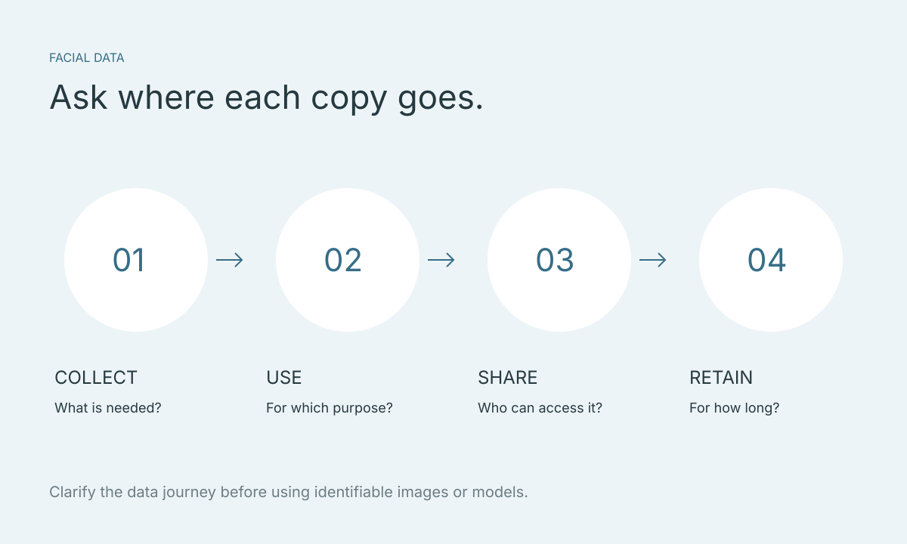

รูปใบหน้าและโมเดล 3D: คำถามความเป็นส่วนตัวก่อนใช้แอปหรือคลินิก
การใช้รูปหรือโมเดลใบหน้าไม่ได้จบที่กดอัปโหลด ไฟล์อาจผ่านโทรศัพท์ แอปภายนอก พื้นที่เก็บไฟล์ และระบบของคลินิก รายการคำถามต่อไปนี้ช่วยให้ผู้ใช้และทีมคลินิกมองเห็นเส้นทางข้อมูล และรู้ว่าคำตอบใดต้องขอจากผู้ให้บริการแต่ละราย

ประเด็นสำคัญ
- ถามให้ครบตลอดเส้นทางข้อมูล ไม่ใช่เฉพาะแอปปลายทาง
- แยกการใช้ประกอบการปรึกษาออกจากการใช้เพิ่มเติม
- เริ่มถามความเข้ากันได้โดยไม่ส่งข้อมูลผู้รับบริการจริง
รูปธรรมดา โมเดล 3D และข้อมูลชีวภาพไม่ใช่คำเดียวกัน
ข้อมูลที่ระบุตัวบุคคลได้เกี่ยวข้องกับข้อมูลส่วนบุคคล ส่วนมาตรา 26 ของ PDPA มีนิยามข้อมูลชีวภาพที่เกี่ยวกับเทคนิคหรือเทคโนโลยีเพื่อจำแนกบุคคล อย่าสรุปสถานะจากคำว่า “รูป” หรือ “3D” เพียงอย่างเดียว ให้ผู้รับผิดชอบพิจารณาวิธีใช้และบริบทจริง
เริ่มจากรายการที่มีอยู่จริง เช่น รูปต้นฉบับ โมเดล พื้นผิวของโมเดล ภาพจำลอง และข้อมูลที่แนบกับไฟล์ แต่ละรายการอาจถูกส่งต่อหรือเก็บคนละที่ คำถามที่ว่า “ลบรูปแล้วหรือยัง” จึงควรระบุว่าหมายถึงรายการใด

วาดเส้นทางข้อมูลให้ครบ
สำหรับระบบที่นำเข้าโมเดลจากแอปภายนอก เขียนเส้นทางแบบง่าย: โทรศัพท์ → แอปสร้างโมเดล → ไฟล์ส่งออก → ระบบที่ใช้ดูโมเดล จากนั้นเพิ่มตำแหน่งที่ทีมเคยทำสำเนา เช่น โฟลเดอร์ร่วม หรือข้อความที่ใช้ส่งงาน
Faceliora Clinic นำเข้าโมเดลที่สร้างด้วยแอปภายนอก จึงควรถามทั้งผู้ให้บริการแอปสร้างโมเดลและทีม Faceliora การได้คำตอบจากฝ่ายหนึ่งไม่ได้ยืนยันวิธีจัดการข้อมูลของอีกฝ่าย
- ข้อมูลแต่ละชุดส่งให้ใคร และส่งผ่านช่องทางใด?
- มีระบบหรือผู้ให้บริการอื่นที่เกี่ยวข้องหรือไม่?
- เมื่อส่งออก มีไฟล์ประกอบหรือสำเนาเพิ่มที่ไหน?
ถามวัตถุประสงค์ของการใช้ให้ชัด
คำว่า “ใช้บริการ” อาจกว้างเกินไป ลองถามเป็นกิจกรรม เช่น ใช้เพื่อแสดงประกอบการปรึกษา เก็บเพื่อดูครั้งถัดไป หรือใช้ในงานอื่น มีการนำไปพัฒนาระบบ สาธิต หรือประชาสัมพันธ์หรือไม่ และอธิบายการใช้เหล่านี้ไว้ตรงไหน
บทความนี้ไม่ได้สรุปว่าทุกกิจกรรมใช้ฐานความยินยอมแบบเดียวกัน คลินิกควรให้ผู้รับผิดชอบข้อมูลตรวจฐานกฎหมายและเงื่อนไขที่เกี่ยวข้องกับการใช้จริง ไม่ใช้การมีช่องติ๊กเพียงช่องเดียวเป็นข้อสรุปว่าจัดการครบแล้ว
- ข้อมูลนี้จำเป็นต่อขั้นตอนใดของบริการ?
- มีการใช้นอกเหนือจากการปรึกษาที่ฉันขอหรือไม่?
- ถ้าไม่ต้องการการใช้เพิ่มเติม ต้องติดต่อใคร?
ถามเรื่องสิทธิ์เข้าถึง ระยะเวลาเก็บ และสำเนา
สำหรับการประเมินวิธีทำงานของคลินิก ให้ขอคำตอบที่ระบุคนหรือหน้าที่ เช่น แพทย์ ผู้ประสานงาน หรือทีมสนับสนุน แทนคำว่า “เฉพาะทีม” อย่างเดียว ถามด้วยว่าจะรับมืออย่างไรเมื่อบุคลากรเปลี่ยนหน้าที่หรือออกจากงาน
เมื่อคุยเรื่องการลบ ให้แยกไฟล์ที่ใช้งาน สำเนาที่ส่งไปแล้ว และสำรองข้อมูล ถามว่าต้องยื่นคำขอที่ไหนและจะได้คำอธิบายผลการดำเนินการอย่างไร การลบอาจมีเงื่อนไขหรือหน้าที่เก็บรักษาตามบริบท จึงไม่ควรรับรองล่วงหน้าว่าทุกสำเนาจะหายทันที
- ใครเข้าถึงได้ และจำกัดสิทธิ์อย่างไร?
- เก็บข้อมูลแต่ละประเภทนานเท่าใด และเพราะอะไร?
- คำขอเข้าถึง แก้ไข หรือลบข้อมูลส่งถึงใคร?
ตัวอย่าง: นัดเดโมโดยยังไม่ส่งใบหน้าจริง
หากคลินิกต้องการทราบว่าไฟล์จากแอปหนึ่งนำเข้าได้หรือไม่ ข้อความแรกสามารถระบุชื่อแอป เวอร์ชัน อุปกรณ์ และนามสกุลไฟล์ได้ก่อน แล้วถามวิธีใช้ตัวอย่างที่เหมาะสม วิธีนี้ช่วยให้ประเมินขั้นตอนโดยยังไม่ส่งข้อมูลผู้รับบริการผ่านหลายช่องทาง
แบบฟอร์มนัดสาธิตบนเว็บไซต์ Faceliora เก็บเฉพาะข้อมูลติดต่อ ไม่ใช่ช่องทางรับโมเดลใบหน้าสำหรับให้บริการ เมื่อถึงขั้นต้องใช้ตัวอย่าง ให้ตกลงวิธีส่ง วัตถุประสงค์ และผู้รับกับทีมก่อน อย่าแนบข้อมูลเคสจริงลงในข้อความทั่วไปโดยยังไม่ยืนยัน
เก็บคำตอบเป็นบันทึกสั้น ๆ ที่กลับมาอ่านได้
ทำตารางของคลินิกเองโดยใช้หัวข้อ “ข้อมูล — วัตถุประสงค์ — ผู้เข้าถึง — ที่เก็บ — ระยะเวลา — ผู้ติดต่อ” ถ้ามีคำตอบที่ยังไม่ทราบ ให้ระบุว่ารอการยืนยัน ไม่ใส่คำว่า “ปลอดภัย” แทนรายละเอียดที่ยังขาด
แหล่งกฎหมายที่อ้างอิงเป็นตัวบท PDPA ฉบับแปลภาษาอังกฤษที่เผยแพร่บนเว็บไซต์หน่วยงานรัฐไทย บทความนี้เป็นรายการสำหรับตั้งคำถาม ไม่ใช่ความเห็นทางกฎหมายหรือการรับรองมาตรการของผลิตภัณฑ์ใด การใช้ในประเทศอื่นต้องพิจารณากฎหมายของประเทศนั้นด้วย